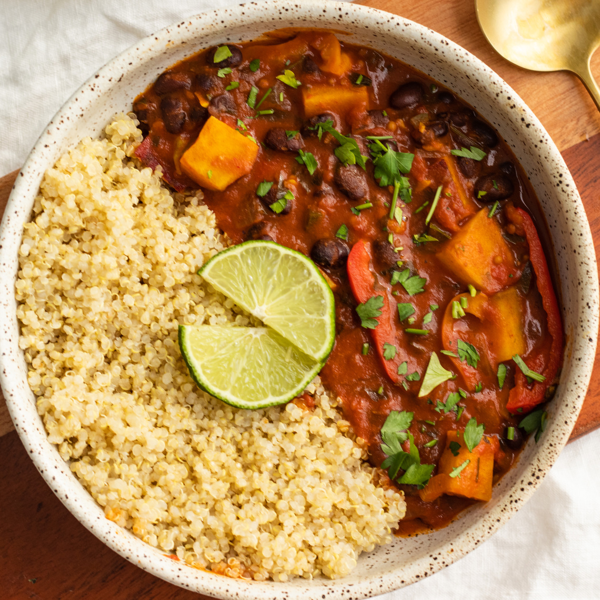

Black Bean and Sweet Potato Curry

Description
Ingredients
- 2 sweet potatoes, scrubbed and cubed.
- 1/2 Butternut squash, cut into 1 cm cubes.
- 1 1/2 tsp each:
- ground cumin
- ground coriander
- turmeric
- sweet paprika
- garam masala
- 2 tbsp light olive or rapeseed oil
- 1 onion, finely chopped
- 2-3 garlic cloves, crushed
- 1 tsp fresh grated ginger
- 14 oz can chopped tomatoes
- 1 tbsp tomato puree
- 9 fl oz hot water
- 2 14 oz cans black beans, drained and rinsed
- 7 oz baby spinach or pak choi, roughly chopped.
- A handful of fresh coriander, chopped
- Juice of 1/2 lemon
- Salt and freshly ground black pepper
- Plain greek yogurt